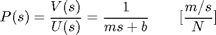
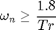
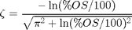
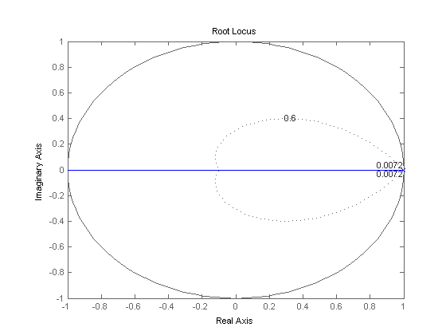
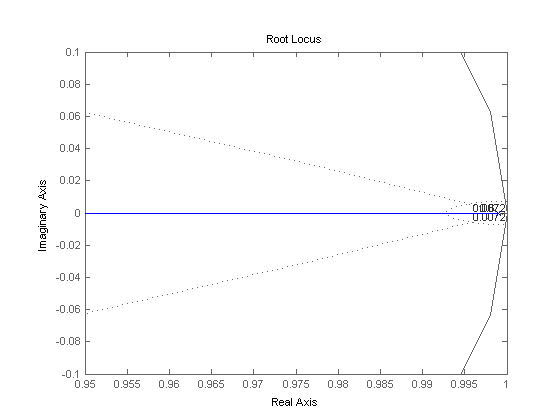
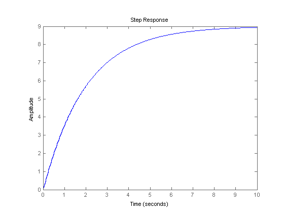
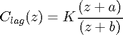
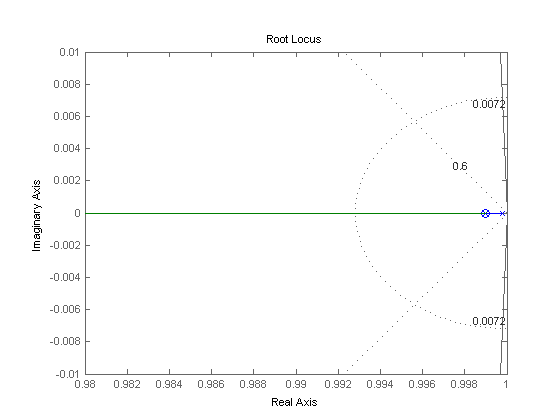
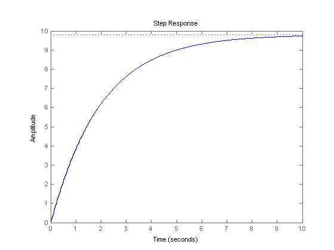

Cruise Control: Digital Controller Design
In this digital control version of the cruise control problem, we are going to use the root-locus design method to design the digital controller.
Key MATLAB commands used in this tutorial are: tf , c2d , rlocus , zgrid , feedback , step
Contents
System model
The transfer function model for the cruise control problem is given below. Please see the Cruise Control: System Modeling page for the derivation.
(1)
System parameters
For this example, let's assume that parameters of the system are
(m) vehicle mass 1000 kg
(b) damping coefficient 50 N.s/m
(r) reference speed 10 m/s
(u) nominal control force 500 N
Performance specifications
We need to design a controller to meet the following design criteria for this problem:
- Rise time < 5 s
- Overshoot < 10%
- Steady-state error < 2%
Discrete-time transfer function
The first step in performing a discrete analysis of a system is to find the discrete-time equivalent transfer function of the continuous portion. We will convert the above transfer function (Y(s)/U(s)) to a discrete-time transfer function using the MATLAB function c2d. To use this function, you need to specify three arguments: system, sampling time (Ts), and the 'method'. You should already be familiar with how to enter num and den matrices. The sampling time (Ts), in the unit of sec/sample, should be smaller than 1/(30*BW), where BW is the closed-loop bandwidth frequency. For the method, we will use the zero-order hold ('zoh').
Let the sampling time equal 1/50 sec; this is sufficiently fast assuming that the bandwidth frequency is 1 rad/sec. Now enter the following commands into an m-file and run it in the command window.
m = 1000; b = 50; u = 500; s = tf('s'); P_cruise = 1/(m*s+b); Ts = 1/50; dP_cruise = c2d(P_cruise,Ts,'zoh')
dP_cruise = 1.999e-05 --------- z - 0.999 Sample time: 0.02 seconds Discrete-time transfer function.
Root locus in the z-Plane
Recall from the Digital Control Tutorial page, the MATLAB function zgrid can be used to find an acceptable region of the discrete root-locus that gives the desired gain (K). The zgrid command requires two arguments: Natural frequency (Wn) and damping ratio (zeta). These two arguments can be found from the rise time and the overshoot requirements and the following two equations.
(2)
(3)
where,
- zeta = Damping ratio
- Wn = Natural frequency (rad/sec)
- Tr = Rise time
- %OS = Maximum overshoot
Since our rise time and overshoot requirements are 5 seconds and 10%, respectively, we can determine that the natural frequency (Wn) must be greater than 0.36 rad/sec and the damping ratio (zeta) must be greater than 0.6.
Let's generate the root-locus and use the zgrid command to find the acceptable region of the root-locus. But before doing that, if you refer to the Digital Control Tutorial, the natural frequency argument for zgrid needs to be in units of rad/sample, so let Wn = 0.36*Ts = 0.0072 rad/sample. Now add the following commands to the above m-file and rerun it. You should get the following plot.
Wn = 0.0072; zeta = 0.6; rlocus(dP_cruise) zgrid(zeta, Wn) axis ([-1 1 -1 1])
The region of the complex plane which interests us is that which is near the point (1,0), so you should zoom in on this point. Rerun using the following axis command and your figure should now appear as shown below.
axis ([0.95 1 -.1 .1])
The dotted line on the right, indicates the locations of constant natural frequency (Wn), and the natural frequency is greater than 0.0072 outside the line. The other dotted line indicates the locations of constant damping ratio (zeta), and the damping ratio is greater than 0.6 inside the line. The jagged vertical line is a portion of the unit circle which is calculated at low resolution (hence the jaggedness).
In the above plot, you can see that part of the root locus is inside the desired region. Let's find a specific gain (K) using the MATLAB function rlocfind and then obtain the corresponding step response. Running the command [K,poles] = rlocfind(dP_cruise) in the MATLAB command window will generate a prompt directing you to select a point on the root locus. Remember that if you choose a pole which is too far inside the unit circle, then the step response will be too fast indicating a physically unreasonable acceleration. Therefore, you should choose the pole which is near the intersection of the constant natural frequency and the real axis. Select the point near 0.99 as shown by the cross mark on the following root locus graph.

After selecting a point, you should see the following output in the MATLAB command window indicating the point you chose, the point on the root locus closest to that point (the pole), and the gain K that places the closed-loop pole at that location.
Select a point in the graphics window
selected_point =
0.9900 - 0.0003i
K =
451.1104
poles =
0.9900
Then to see the closed-loop step response, add the following code to your m-file.
K = 451.1104; sys_cl = feedback(K*dP_cruise,1); r = 10; figure step(r*sys_cl,10);
This response satisfies the rise time and overshoot requirements. But the steady-state error is about 11%. To obtain the desired steady-state error, we will modify the digital controller.
Compensation using a digital controller
Recall from the continuous Cruise Control: Root Locus page, a lag compensator was added to the system to obtain the desired response. In this digital control version of the cruise control problem, we will modify the existing digital controller by adding additional lag compensation of the form shown below.
(4)
There is a guideline for the design digital lead and lag compensators and a guideline for the design of continuous-time lead and lag compensators. The discrete design method described says that the zero of the lag compensator should be chosen to (approximately) cancel one of the plant poles, as long as it is stable. Thus, we choose the zero to be at zo = 0.999.
To reduce the steady-state error, we note that the low frequency gain of the discrete-time control system with a lag compensator is increased by a factor of (1 - zo)/(1 - po). To reduce the steady-state error by a factor of 5, we choose po = 0.9998. To have a gain of 1 at zero frequency, the numerator is multiplied by Kd = (1 - zp)/(1 - zo) = 0.2 before using the root locus. Note that the whole compensator is multiplied by the loop gain determined from the root locus.
Now we have the discrete-time compensator transfer function. Let's generate the root-locus and obtain the step response. First create a new m-file and enter the following commands.
m = 1000; b = 50; u = 500; s = tf('s'); P_cruise = 1/(m*s+b); Ts = 1/50; dP_cruise = c2d(P_cruise,Ts,'zoh'); z = tf('z',Ts); C = 0.2*(z - 0.999)/(z - 0.9998); Wn = 0.0072; zeta = 0.6; rlocus(C*dP_cruise) zgrid(zeta, Wn) axis([0.98 1 -0.01 0.01])
Then enter the command [K,poles] = rlocfind(C*dP_cruise) at the command line and again choose a pole location near 0.99 as indicated by the cross marks in the following figure.

After selecting a point, you should see the following output in the MATLAB command window indicating the point you chose, the point on the root locus closest to that point (the pole), and the gain K that places the closed-loop pole at that location.
Select a point in the graphics window
selected_point =
0.9900 - 0.0000i
K =
2.4454e+03
poles =
0.9900
0.9900
Finally, to see the closed-loop step response, add the following code to your m-file.
K = 2.4454e+03; sys_cl = feedback(K*C*dP_cruise,1); r = 10; step(r*sys_cl,10);
This response rises about as fast as before, but the steady-state error has been reduced to 2%. This system satisfies all of the design requirements while requiring a reasonable amount of control effort.
Note: A design problem does not necessarily have a unique answer. For practice, you may try other compensators to obtain a better response than the one shown above.